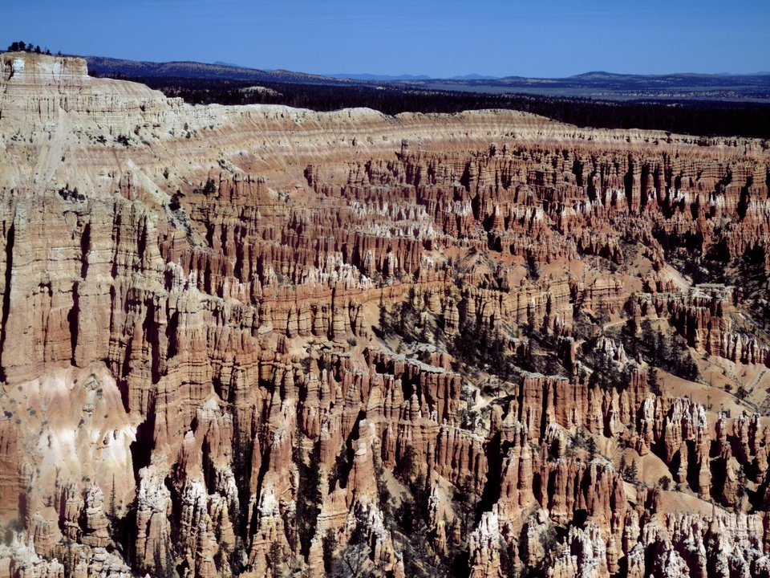

In the park · Historic lodge
The Lodge at Bryce Canyon
A 1920s lodge near the rim, open spring to fall.
Official details for The Lodge at Bryce CanyonHoodoos at sunrise.
Bryce Canyon isn’t really a canyon but a series of natural amphitheaters filled with thousands of orange and pink hoodoos, at their best at sunrise from Bryce Point. Land at Bryce Canyon Airport, a few miles from the park entrance, stay at the 1920s Lodge at Bryce Canyon or Ruby’s Inn, hike down among the spires on the Navajo Loop, and drive Scenic Byway 12, one of the most beautiful roads in the West.

Time illustration: direct distance at 150 KTAS plus 15 minutes for departure and arrival, matching the discovery page. Use ForeFlight for your actual flight plan.
KBCE, Bryce Canyon Airport, is a non-towered Garfield County airport at 7,590 feet with a 7,395-foot runway, about 10 minutes from the park entrance.
Bryce Canyon Airport, Bryce Canyon City, UT
High elevation; compute performance carefully. After-hours fuel requires a call (435-690-9498) and a call-out fee. Remote area; arrange transportation before you go. No live fuel price is shown.
Utah canyon-country flying: high elevations and density altitude, gusty afternoon winds, summer monsoon storms from July to September, smoke in fire season, and long distances between airports. About 1630 nm from Myrtle Beach: two long days each way with several fuel stops. Plan a week, or overnight on the way out and back.
Rates and availability need travel dates. Book the lodge early; it closes in winter.
A 1920s lodge near the rim, open spring to fall.
Official details for The Lodge at Bryce CanyonThe closest hotel to the park, open year-round.
Official details for Best Western Plus Ruby’s InnA Western-style hotel with rooms and cabins, three miles from the park entrance.
Official details for Bryce Canyon ResortReserve weekend dinners.
Dinner in the historic lodge’s dining room, near the rim (seasonal).
Official details for The Lodge at Bryce Canyon RestaurantA Western music show with dinner.
Official details for Ebenezer’s Barn & GrillSteaks and seasonal plates with a valley view in Tropic, about 15 minutes east.
Official details for Stone Hearth GrilleFlame-grilled steaks and Western-Mexican food at Bryce Canyon Resort.
Official details for Cowboy Ranch HouseBig breakfasts and dinners at Ruby’s Inn.
Official details for Cowboy’s Buffet & Steak RoomA celebrated farm restaurant in Boulder, about two hours east on Scenic Byway 12 (seasonal).
Official details for Hell’s Backbone Grill & FarmRestaurants near the park.
Bryce Canyon Country for More restaurantsSunrise and sunset are the best light.
This prototype links to the local visitor site. It does not yet match events to your travel dates.
Lodge open, shuttle running.
NPS for Main seasonTelescopes and talks.
NPS for Astronomy FestivalQuiet, cold and beautiful.
NPS for Snow on the hoodoosCheck the local calendar when choosing a weekend, and confirm dates and tickets with the organizer.
A sample Bryce weekend. This is a two-day flight each way; plan a week. No bookings or availability confirmed.
Land at KBCE mid-morning.
Rim viewpoints.
Part of the Navajo Loop, then back to the airport.
Land at KBCE, subject to weather, density altitude and your actual flight plan.
Rim viewpoints.
The dinner show at Ebenezer’s.
Sunrise at Bryce Point, then the Navajo Loop.
Scenic Byway 12.
A ranger astronomy program.
Sunrise on the rim again.
Compute takeoff performance for the morning temperature and allow time at the FBO.
Mountain afternoons bring wind, turbulence and storms; leave early.
Sunrise at Bryce Point.
Scenic Byway 12.
A ranger astronomy program.
These details make the difference between an appealing list and a usable getaway.
Lodging, then a car or shuttle.
About 1,630 nm: two long days each way.
The rim is above 8,000 feet; nights are cold.
May to October.
Research-based selections, not personal-visit endorsements. Researched November 1, 2026. Confirm hours, prices and availability directly with each place before booking. Spotted something out of date, or have a favorite we missed? Email us at hello@wingawayweekends.com.
WingAway Weekends helps you discover the destination. Use ForeFlight and current official aviation information for route, performance, weather, NOTAMs and preflight decisions. Flight planning and PIC responsibility stay with the pilot.